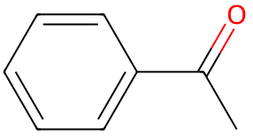

平成23年度 問6 有機化学及び燃料
次の表は、目的化合物と、ケトン類を出発原料とする合成方法を示している。目的化合物の合成を達成できないものはどれか。
| 選択肢 | 目的化合物 | ケトン類を出発原料とする合成方法 | |
|---|---|---|---|
|
①
|
メチレンシクロヘキサン | シクロヘキサノンとメチレントリフェニルホスホラン（Wittig試薬）とを反応させる。 | |
|
②
|
2-フェニル-2-ブタノール | アセトフェノンと臭化エチルマグネシウムの反応後、酸性水溶液で処理する。 | |
|
③
|
2-フェニル-2-ブタノール | 2-ブタノンと臭化フェニルマグネシウムの反応後、酸性水溶液で処理する。 | |
|
④
|
ジシクロヘキシルメタノール | ジシクロヘキシルケトンと水酸化アルミニウムとの反応後、酸性水溶液で処理する。 | |
|
⑤
|
α-ブロモアセトフェノン | 酢酸中でアセトフェノンと等モル量の臭素と反応させる。 | |
正答
④ 目的化合物：ジシクロヘキシルメタノール、ケトン類を出発原料とする合成方法：ジシクロヘキシルケトンと水酸化アルミニウムとの反応後、酸性水溶液で処理する。
水酸化アルミニウムは弱塩基性で、ルイス酸としても機能します。ケトンの還元により2級アルコールは得られるものの、ケトン自体の反応性も低く、還元剤は水素化アルミニウムリチウムなどヒドリド還元剤が必要であるため水酸化アルミニウムでは進行しません。
1番のWittig反応はリンイリドを用いてカルボニル化合物からアルケンを合成する反応です。
2番と3番はグリニャール反応です。グリニャール試薬の中のアルキル基による求核付加機構で進行します。カルボニル化合物のカルボニル炭素に攻撃することで、カルボニルがアルコールに変化しアルキルが結合します。
5番はカルボニルのα炭素のハロゲン化です。酸触媒によってカルボニル基の酸素がプロトン化され、α水素が引き抜かれることでエノールが生成します。エノールの二重結合のπ電子がハロゲンと反応して、C-Br 結合が生成します。
